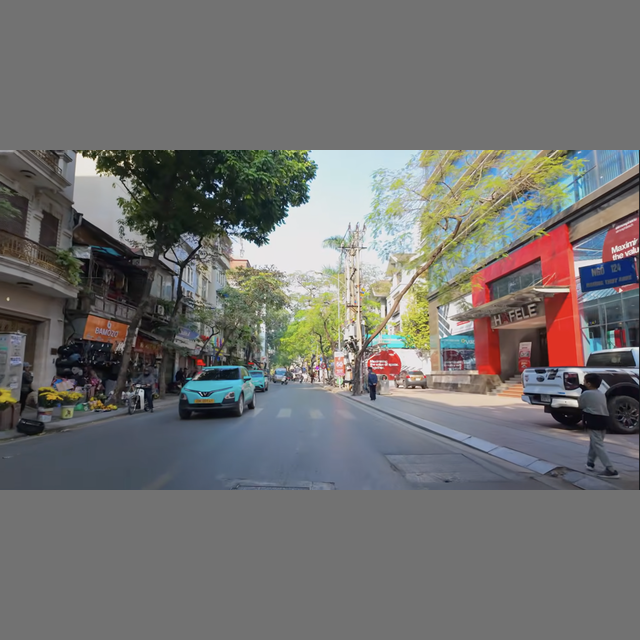
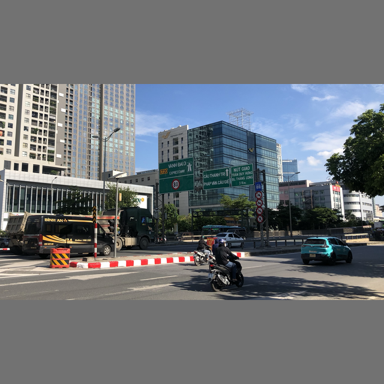
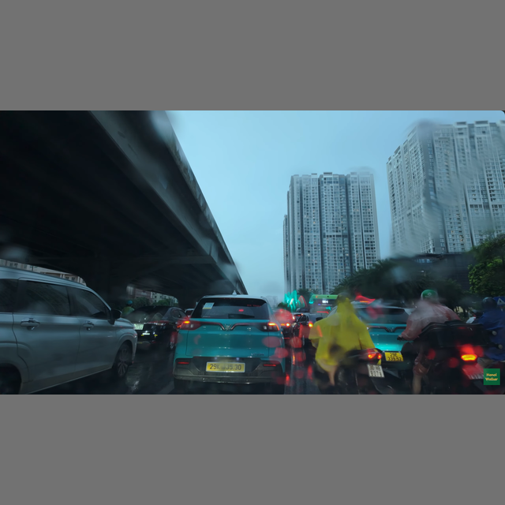

Slide 1 / 6
Chiến lược Cốt lõi
Data-Centric Optimization cho Bài toán Nhận diện GreenSM
🎯
Bài toán & Ràng buộc Cuộc thi
- Mục tiêu: Single-class object detection (
class 0: GreenSM). Phát hiện chính xác ô tô taxi điện Xanh SM trong môi trường giao thông phức tạp tại Việt Nam. - Kiến trúc cố định: Mô hình cố định là YOLOv8n (
yolov8n.pt), kích thước chuẩn 640x640. Mọi đội dùng cùng kiến trúc và cấu hình. - Quy chế hậu xử lý cố định: Letterbox 640x640,
conf=0.001,iou=0.7, tối đa 300 boxes/ảnh. - Tiêu chí đánh giá: Điểm số = $100 \times \text{mAP}@[0.5:0.95]$ trên tập test ẩn (40 public / 80 private).
⚡
Chiến lược Tiếp cận Data-Centric Toàn diện
- Chất lượng > Số lượng: Không thể can thiệp kiến trúc, lợi thế quyết định đến từ độ chuẩn xác của nhãn và tính bao phủ của dữ liệu.
- Chu trình lặp 6 bước khép kín:
1. Thu thập đa dạng → 2. Guideline chuẩn → 3. Pre-label CVAT → 4. Review chéo QA → 5. Train & Export → 6. Error Analysis
- Triệt tiêu False Positive: Khai thác các mẫu Hard Negative (xe VinFast cá nhân, xe buýt điện VinBus, xe dán decal xanh lá).
Slide 2 / 6
Bước 1: Thu thập Dữ liệu
Đa dạng hóa Miền Dữ liệu & Khai thác Hard Negatives
233
Tổng số ảnh chuẩn hóa (640x640)
146
Ảnh đường phố tổng hợp (images/)
56
Ảnh ban đêm & Mưa đêm (images_night/)
31
Ảnh ban ngày chọn lọc (image_day/)

Ban ngày & Góc chụp cận
Ánh sáng tự nhiên, góc chụp 3/4 rõ logo và đèn nóc.

Mật độ cao & Nút giao thông
Nút giao Mai Dịch: mật độ xe máy/ô tô dày, xe bị che khuất một phần.

Mưa đêm & Phản chiếu phức tạp
Hanoi Night Drive: đèn pha, đèn đường và vệt sáng ướt mặt đường.
Slide 3 / 6
Bước 2: Quy chuẩn Nhãn
Loại bỏ Nhiễu Nhãn bằng Label Guideline v1.0
📐
Quy tắc Hình học Bounding Box (BBox)
- BBox Tightness (Độ khít tối đa): Hộp bao phải ôm sát mép thân xe thực sự nhìn thấy. Không vẽ box theo phần thân xe bị che khuất trong tưởng tượng.
- Xử lý cắt mép (Truncation): Khi xe chạm mép ảnh, box kết thúc ngay tại đường biên; tuyệt đối không mở rộng tọa độ ra ngoài khung hình.
- Ngưỡng kích thước tối thiểu: Lọc bỏ toàn bộ xe có kích thước dưới 15 × 15 pixel do không đủ căn cứ nhận diện đặc trưng Xanh SM.
🛡️
Bằng chứng Nhận diện & Ca Mơ hồ (Ambiguity)
- Chỉ gán khi có chứng cứ dịch vụ: Bắt buộc thấy logo, chữ
Xanh SM / Green SMhoặc đèn mào taxi. Không bao giờ gán xe chỉ vì màu sơn xanh/cyan. - Phân biệt xe VinFast cá nhân: Xe VinFast VF5, VF8, VF9 màu xanh cá nhân được phân loại là Negative Samples, không gán box.
- Nguyên tắc Nhất quán: Các ca mâu thuẫn được lưu vào Annotation Log để reviewer quyết định tập trung, tránh hiện tượng lệch nhãn giữa các thành viên.
Slide 4 / 6
Bước 3: Tự động hóa Pipeline
Tăng tốc Gán nhãn bằng CVAT API & YOLO26n
⚙️
Quy trình Tự động hóa qua Script (`prelabel_job43.py`)
- Tích hợp Trực tiếp CVAT Server: Kết nối qua REST API bằng session cookie và CSRF token, tự động fetch danh sách tasks/jobs.
- Model Pre-labeling: Dùng trọng số
YOLO26nchuyên phát hiện phương tiện 4 bánh (Car ID 2, Truck ID 7) vớiconf=0.25vàagnostic_nms=True. - Tiền xử lý Tọa độ: Tự động clamp tọa độ vào khung $[0, 640]$, loại bỏ box $< 15\text{px}$, chuyển đổi về định dạng shapes của CVAT.
- Tối ưu hóa thời gian: Giảm 70% thời gian vẽ tay. Người gán chỉ cần kiểm duyệt, siết chặt góc box và xóa False Positives.
💻
Đoạn mã Thực thi Cốt lõi
# Tự động suy luận và đẩy nhãn nháp lên CVAT Job
for frame_idx, frame_info in enumerate(frames):
img = Image.open(BytesIO(r_frame.content))
res = model.predict(img, conf=0.25, classes=[2, 7])[0]
for box in res.boxes:
x1, y1, x2, y2 = box.xyxy[0].tolist()
if (x2 - x1) >= 15 and (y2 - y1) >= 15:
shapes.append({
"label_id": 63, # GreenSM
"points": [x1, y1, x2, y2],
"type": "rectangle"
})
Slide 5 / 6
Bước 4: Kiểm duyệt QA/QC
Quy trình QA/QC 2 Lớp & Kiểm soát Toàn vẹn Dữ liệu
👥
1. Kiểm tra Chéo (Cross-check)
- Người gán nhãn không tự kiểm tra bài của mình.
- Reviewer độc lập rà soát 100% các bounding box để đối chiếu với `guideline.md`.
- Sửa triệt để các box bị lỏng viền hoặc gán nhầm xe khác.
🤖
2. Xác thực Format Tự động
- Script tự động kiểm tra cú pháp file nhãn `.txt`.
- Ràng buộc class ID duy nhất:
class == 0. - Kiểm tra biên tọa độ: bắt buộc $0 \le cx, cy, w, h \le 1.0$. Lọc triệt để box rỗng hoặc box lỗi âm.
🚫
3. Chống Rò rỉ (Data Leakage)
- Lọc bỏ các frame video quá gần nhau từ cùng một nguồn driving tour.
- Phân bổ dữ liệu nghiêm ngặt giữa tập Train và Val để mô hình phản ánh đúng độ khái quát hóa.
Slide 6 / 6
Bước 5 & 6: Thực nghiệm & Đóng gói
Đánh giá Thực nghiệm (66.34 vs 64.44) & Chiến lược Khóa Bài nộp
66.34 mAP
Lần 1 (submission-run1.zip) • Đã chọn
64.44 mAP
Lần 2 (submission.zip) • Đã chọn
40 ảnh
Kích thước Tập Public Test (Nhiễu cao)
🔬
Phân tích Kỹ thuật: Vì sao điểm Public giảm (-1.90 mAP)?
- Độ nhạy mẫu của tập Public nhỏ (40 ảnh): Trên mẫu 40 ảnh, chỉ cần lệch 1-2 bounding box ở ngưỡng IoU cao hoặc 1 ca biên bị bỏ qua là điểm số dao động 1.5 - 2.5 mAP.
- Trade-off giữa Siết nhãn (Tightness) & Ground-truth người gán: Re-label khắt khe giúp model có Precision cực cao. Nhưng nếu tập test ẩn có nhãn vẽ hơi rộng tay (loose box), model học box quá sát sẽ bị phạt nhẹ IoU ở dải IoU 0.85-0.95.
🎯
Chiến lược Khóa 2 Bài nộp & Tái lập (Reproducibility)
- Bảo vệ rủi ro kép (Risk Mitigation):
• Bài 66.34: Phòng ngừa trường hợp tập Private có cùng phong cách nhãn với Public.
• Bài 64.44: Đảm bảo tính tổng quát hóa cao nhất trên 80 ảnh Private nhờ dữ liệu sạch, không overfit nhãn nhiễu. - 100% Tái lập: Cố định
SEED = TEAM_ID, đóng gói file ONNX hợp lệ chuẩn kích thước[1, 5, 8400].